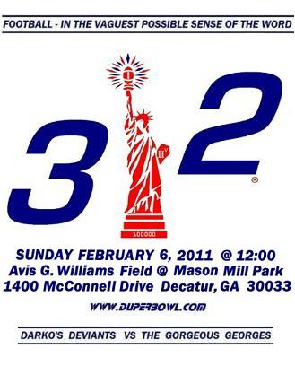

| Darko's Deviants | 28 |
| The Gorgeous Georges | 35 |
This year's pictures:

|
Sunday, February 6,
2011 at 12:00 pm Rain or shine! |
Avis G. Williams Field at Mason Mill Park
1400 McConnell Drive, Decatur, GA 30033
Directions from the field to Mo's Pizza
3109 Briarcliff Road, Atlanta, GA 30329
Weather history for date of February 6 in Atlanta
| Sunrise | Sunset | Avg Hi | Avg Lo | Rec Hi | Rec Lo |
| 7:31 AM | 6:13 PM | 53°F | 30°F | 70°F | 13°F |
Darko's Deviants vs The Gorgeous Georges
Duper Bowl XXXII
Give me your weak, your feable, your graying masses yearning
to drink warm beer on a cold Winter Sunday.
Send forth those with poor judgement and they who drink in the morning,
for it is the season of...THE DUPER BOWL!!!
Anyone who can drive, walk, limp, crawl or stagger to:
Avis G. Williams Field
by 12:00 PM
on Sunday, February 6, 2011
is invited to the 32nd Annual Duper Bowl.
In keeping with tradition
It don't cost nuth'n and the beer is free, too!
So be there even if you just sit in the stands and laugh at the rest of us.
Bring your friends and family, too...
Eventually they'll forgive you.
A beer, pizza and recuperation session will follow the game at:
Mo's Pizza
3109 Briarcliff Road
Atlanta, GA 30329
| Contact the Commish | Map | The Spirit of Duper Bowl | Poster | Hall of Fame |
{kind=link}